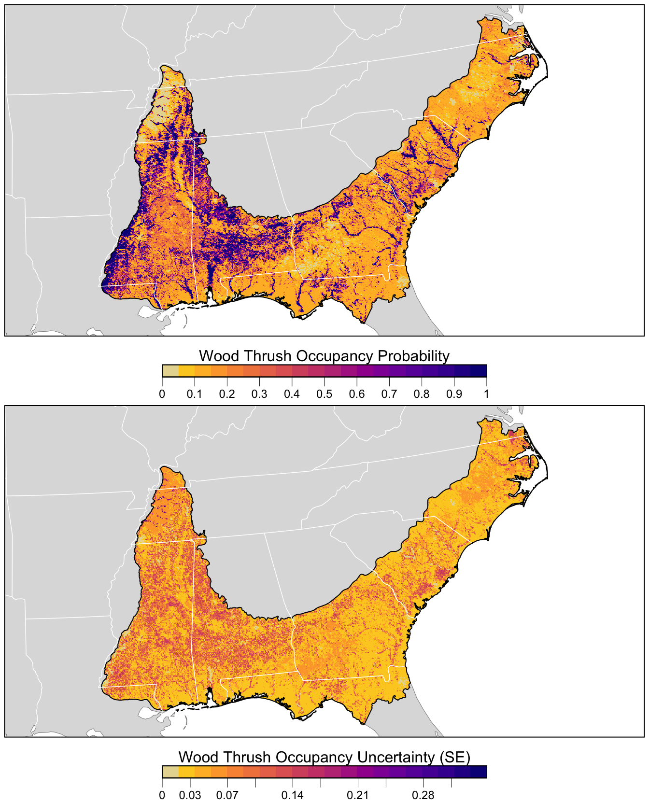

Lesson 11 Occupancy
In this lesson, we’ll use occupancy models to estimate the occupancy of Wood Thrush on eBird checklists in June in BCR 27, while explicitly accounting for imperfect detection. First, we’ll give a short presentation introducing occupancy modeling. The presentation can be downloaded in PowerPoint or PDF format, or viewed on SpeakerDeck.
Let’s start by loading the packages and data required for this lesson.
library(auk)
library(lubridate)
library(sf)
library(dggridR)
library(unmarked)
library(raster)
library(ebirdst)
library(MuMIn)
library(AICcmodavg)
library(fields)
library(tidyverse)
# resolve namespace conflicts
select <- dplyr::select
projection <- raster::projection
set.seed(1)
# ebird data
ebird <- read_csv("data/ebd_woothr_june_bcr27_zf.csv") %>%
mutate(year = year(observation_date),
# occupancy modeling requires an integer response
species_observed = as.integer(species_observed))
# modis land cover covariates
habitat <- read_csv("data/pland-elev_location-year.csv") %>%
mutate(year = as.integer(year))
# combine ebird and modis data
ebird_habitat <- inner_join(ebird, habitat, by = c("locality_id", "year"))
# prediction surface
pred_surface <- read_csv("data/pland-elev_prediction-surface.csv")
# latest year of landcover data
max_lc_year <- pred_surface$year[1]
r <- raster("data/prediction-surface.tif")
# load gis data for making maps
map_proj <- st_crs(102003)
ne_land <- read_sf("data/gis-data.gpkg", "ne_land") %>%
st_transform(crs = map_proj) %>%
st_geometry()
bcr <- read_sf("data/gis-data.gpkg", "bcr") %>%
st_transform(crs = map_proj) %>%
st_geometry()
ne_country_lines <- read_sf("data/gis-data.gpkg", "ne_country_lines") %>%
st_transform(crs = map_proj) %>%
st_geometry()
ne_state_lines <- read_sf("data/gis-data.gpkg", "ne_state_lines") %>%
st_transform(crs = map_proj) %>%
st_geometry()11.1 Data preparation
Since we’ll be fitting a single-season occupancy models, we’ll need to start by focusing on observations from June of a single year, in this case the most recent year for which we have data. At this point, we also suggest subsetting the data to observations with 5 or fewer observers since there are few checklists with more than 5 observers.
# filter to a single year of data
ebird_filtered <- filter(ebird_habitat,
number_observers <= 5,
year == max(year))Next, we need to extract a subset of observations that are suitable for occupancy modeling. In particular, occupancy models typically require data from repeated visits to a single site during a time frame over which the population can be considered closed. The auk function filter_repeat_visits() is designed to extract subsets of eBird data that meet these criteria. Specifically, we want repeat visits to the same location by the same observer, so we’ll use latitude, longitude, and observer ID to define ‘sites’. We’ll take the month of June as our period of closure.The relevant parameters in filter_repeat_visits are:
min_obsandmax_obs: the minimum and maximum number of repeat visits to a given site. Occupancy modeling requires at least two visits to each site.date_var: the column name of the date variable used to define the period of closure.annual_closure: define the period of closure as the entire year. This works here because we’ve already subset the data to only keep observations from January, which results in the period of closure being the month of January in given year. Then_daysargument can be used to define the period of closure more flexibly.site_vars: a character vector of names of columns that define a site. This is typically the combination of variables defining the location (locality_idorlatitude/longitude) and observer (observer_id).
# subset for occupancy modeling
occ <- filter_repeat_visits(ebird_filtered,
min_obs = 2, max_obs = 10,
annual_closure = TRUE,
date_var = "observation_date",
site_vars = c("locality_id", "observer_id"))Three new columns are added to the dataset when using the function filter_repeat_visits(): site is a unique site ID, closure_id identifies the primary period of closure (in this example the year), and n_observations is the number of visits to each site.
select(occ, site, closure_id, n_observations)
#> # A tibble: 3,656 x 3
#> site closure_id n_observations
#> <chr> <chr> <int>
#> 1 L1005433_obs119886_2019 2019 3
#> 2 L1005433_obs119886_2019 2019 3
#> 3 L1005433_obs119886_2019 2019 3
#> 4 L1007991_obs132896_2019 2019 2
#> 5 L1007991_obs132896_2019 2019 2
#> 6 L1007991_obs970026_2019 2019 3
#> # … with 3,650 more rowsExercise
Suppose you define the temporal period of closure as week long blocks, rather than the whole month of June. Use filter_repeat_visits() to extract eBird data accordingly. Consult the documentation for this function for help.
Exercise
Subsetting eBird data to just the observations suitable for occupancy modeling will inevitably reduce the amount of data. What proportion of observations remain after calling filter_repeat_visits()? How many unique sites do we have?
Now that we have data suitable for occupancy modeling, we need to reformat the data to be accepted by unmarked. The documentation for the unmarked function formatWide() outlines the details of this format. In the EBD, each row is a checklist; however, unmarked requires each row to be a site with the first column specifying the site ID and subsequent columns specifying whether the species was observed on each of the visits to that site. The next group of columns contains site-level covariates, those that vary between sites but are constant across visits to the same site, such as latitude, longitude, and any habitat covariates we might have. Finally, the observation-level covariates, such as distance and duration, each get a set of columns corresponding to the the presence-absence columns. Here’s a simple example with some made up data to illustrate the format:
| site_id | y.1 | y.2 | y.3 | latitude | longitude | forest_cover | distance.1 | distance.2 | distance.3 | time.1 | time.2 | time.3 |
|---|---|---|---|---|---|---|---|---|---|---|---|---|
| site1 | TRUE | FALSE | TRUE | 20.2 | 182 | 0.12 | 14.51 | 10.01 | 12.41 | 33.7 | 43.5 | 20.7 |
| site2 | FALSE | TRUE | 20.6 | 183 | 0.45 | 9.84 | 11.90 | 26.4 | 23.8 | |||
| site3 | TRUE | FALSE | FALSE | 19.9 | 182 | 0.98 | 8.95 | 12.63 | 9.78 | 23.4 | 30.1 | 13.3 |
| site4 | TRUE | FALSE | 21.0 | 183 | 0.23 | 10.26 | 6.00 | 31.9 | 26.9 | |||
| site5 | FALSE | FALSE | FALSE | 29.8 | 183 | 0.43 | 11.34 | 7.58 | 16.88 | 24.8 | 25.0 | 23.6 |
The auk function format_unmarked_occu() takes care of the reformatting for you. In this function, site_covs are the names of the site-level covariates and obs_covs are the names of the observation-level covariates. Prior knowledge of Wood Thrush, as well as the predictor importance results from the encounter rate lesson, inform what land cover variables we choose as occupancy covariates. The five effort variables should always be included as detection covariates, but we’ll also examine whether different habitat types affect the detection probability.
# format for unmarked, select occupancy and detection covariates
occ_wide <- format_unmarked_occu(occ,
site_id = "site",
response = "species_observed",
site_covs = c("latitude", "longitude",
# % deciduous forest
"pland_04",
# % mixed forest
"pland_05",
# % cropland
"pland_12",
# % urban
"pland_13"),
obs_covs = c("time_observations_started",
"duration_minutes",
"effort_distance_km",
"number_observers",
"protocol_type",
"pland_04",
"pland_05"))Exercise
Explore both the occ_wide and occ data frames. They contain the same data in different formats. Try to understand how one data frame was transformed into the other.
As described in lesson 7, we’ll use spatial subsampling to reduce spatial bias. However, here we’ll subsample at the level of ‘sites’ rather than observations.
# generate hexagonal grid with ~ 5 km betweeen cells
dggs <- dgconstruct(spacing = 5)
# get hexagonal cell id for each site
occ_wide_cell <- occ_wide %>%
mutate(cell = dgGEO_to_SEQNUM(dggs, longitude, latitude)$seqnum)
# sample one checklist per grid cell
occ_ss <- occ_wide_cell %>%
group_by(cell) %>%
sample_n(size = 1) %>%
ungroup() %>%
select(-cell)Finally, we’ll convert this data frame of observations into an unmarked object in order to fit occupancy models.
11.2 Occupancy modeling
Now that the data are prepared, we can fit a single-season occupancy model to using the occu() function, specifying the detection and occupancy covariates, respectively, via a double right-hand sided formula of the form ~ detection covariates ~ occupancy covariates.
# fit model
occ_model <- occu(~ time_observations_started +
duration_minutes +
effort_distance_km +
number_observers +
protocol_type +
pland_04 + pland_05
~ pland_04 + pland_05 + pland_12 + pland_13,
data = occ_um)
# look at the regression coefficients from the model
summary(occ_model)
#>
#> Call:
#> occu(formula = ~time_observations_started + duration_minutes +
#> effort_distance_km + number_observers + protocol_type + pland_04 +
#> pland_05 ~ pland_04 + pland_05 + pland_12 + pland_13, data = occ_um)
#>
#> Occupancy (logit-scale):
#> Estimate SE z P(>|z|)
#> (Intercept) -1.930 0.239 -8.09 5.98e-16
#> pland_04 7.698 2.342 3.29 1.01e-03
#> pland_05 0.925 0.793 1.17 2.43e-01
#> pland_12 -1.088 1.907 -0.57 5.68e-01
#> pland_13 -2.179 1.006 -2.17 3.02e-02
#>
#> Detection (logit-scale):
#> Estimate SE z P(>|z|)
#> (Intercept) -1.48021 0.60437 -2.449 0.01432
#> time_observations_started -0.03619 0.02915 -1.242 0.21437
#> duration_minutes 0.00113 0.00339 0.332 0.73982
#> effort_distance_km 0.07467 0.15358 0.486 0.62684
#> number_observers 0.48063 0.33169 1.449 0.14733
#> protocol_typeTraveling 0.88882 0.37258 2.386 0.01705
#> pland_04 -0.73640 0.53583 -1.374 0.16934
#> pland_05 3.25239 1.06567 3.052 0.00227
#>
#> AIC: 690
#> Number of sites: 575
#> optim convergence code: 0
#> optim iterations: 61
#> Bootstrap iterations: 011.2.1 Assessment
The MacKenzie and Bailey goodness-of-fit test can be used to assess the occupancy model fit. Note that to produce accurate results, this process requires simulating about 1,000 bootstrap samples, which can take a long time to run. For the sake of speed, if you want to run the below code, we suggest using nsim = 5.
#>
#> MacKenzie and Bailey goodness-of-fit for single-season occupancy model
#>
#> Chi-square statistic = 1630
#> Number of bootstrap samples = 1000
#> P-value = 0.593
#>
#> Quantiles of bootstrapped statistics:
#> 0% 25% 50% 75% 100%
#> 571 1385 1755 2195 14050
#>
#> Estimate of c-hat = 0.8311.3 Prediction
Now we can estimate the distribution of Wood Thrush in BCR 27 and produce a map. Recall that when we predicted encouter rate, we had to include effort variables in our prediction surface. We don’t need to do that here because the estimated occupancy doesn’t depend on the effort covariates, these only occur in the detection submodel. In addition, predict() can produce both predictions as well as estimates of the standard error.
# make prediction for bcr 27
occ_pred <- predict(occ_model,
newdata = as.data.frame(pred_surface),
type = "state")
# add to prediction surface
pred_occ <- bind_cols(pred_surface,
occ_prob = occ_pred$Predicted,
occ_se = occ_pred$SE) %>%
select(latitude, longitude, occ_prob, occ_se)Checkpoint
Predicting on the full prediction surface will typically take several minutes. As the above code runs, let’s take a short break.
Next, we want to plot these predictions. We’ll convert this data frame to spatial features using sf, then rasterize the points using the prediction surface raster template.
r_pred <- pred_occ %>%
# convert to spatial features
st_as_sf(coords = c("longitude", "latitude"), crs = 4326) %>%
st_transform(crs = projection(r)) %>%
# rasterize
rasterize(r)
r_pred <- r_pred[[c("occ_prob", "occ_se")]]Finally, we can map these predictions!
# project predictions
r_pred_proj <- projectRaster(r_pred, crs = map_proj$proj4string, method = "ngb")
par(mfrow = c(2, 1))
for (nm in names(r_pred)) {
r_plot <- r_pred_proj[[nm]]
par(mar = c(3.5, 0.25, 0.25, 0.25))
# set up plot area
plot(bcr, col = NA, border = NA)
plot(ne_land, col = "#dddddd", border = "#888888", lwd = 0.5, add = TRUE)
# occupancy probability or standard error
if (nm == "occ_prob") {
title <- "Wood Thrush Occupancy Probability"
brks <- seq(0, 1, length.out = 21)
lbl_brks <- seq(0, 1, length.out = 11) %>%
round(2)
} else {
title <- "Wood Thrush Occupancy Uncertainty (SE)"
mx <- ceiling(1000 * cellStats(r_plot, max)) / 1000
brks <- seq(0, mx, length.out = 21)
lbl_brks <- seq(0, mx, length.out = 11) %>%
round(2)
}
pal <- abundance_palette(length(brks) - 1)
plot(r_plot,
col = pal, breaks = brks,
maxpixels = ncell(r_plot),
legend = FALSE, add = TRUE)
# borders
plot(bcr, border = "#000000", col = NA, lwd = 1, add = TRUE)
plot(ne_state_lines, col = "#ffffff", lwd = 0.75, add = TRUE)
plot(ne_country_lines, col = "#ffffff", lwd = 1.5, add = TRUE)
box()
# legend
par(new = TRUE, mar = c(0, 0, 0, 0))
image.plot(zlim = range(brks), legend.only = TRUE,
breaks = brks, col = pal,
smallplot = c(0.25, 0.75, 0.06, 0.09),
horizontal = TRUE,
axis.args = list(at = lbl_brks, labels = lbl_brks,
fg = "black", col.axis = "black",
cex.axis = 0.75, lwd.ticks = 0.5,
padj = -1.5),
legend.args = list(text = title,
side = 3, col = "black",
cex = 1, line = 0))
}
11.4 Exercises
Now that you’ve completed this lesson, try modifying your script to complete at least one of the following exercises:
Try sampling more than a single checklist per grid cell in the spatiotemporal sampling. How does that affect model fit and predictions?
What happens to the size of dataset if you only use stationary counts, or reduce the distance traveled to 1 km? How does it impact the results? How does the different input data affect your interpretation of the results?
What happens to the size of the dataset if you allow repeat visits to be by multiple observers? How does this impact the results.
Produce a map based on model averaged predictions. Note that making these predictions may take up to an hour.